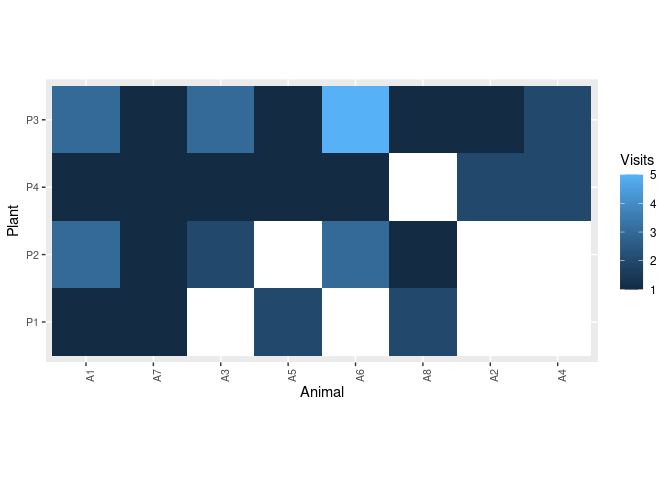
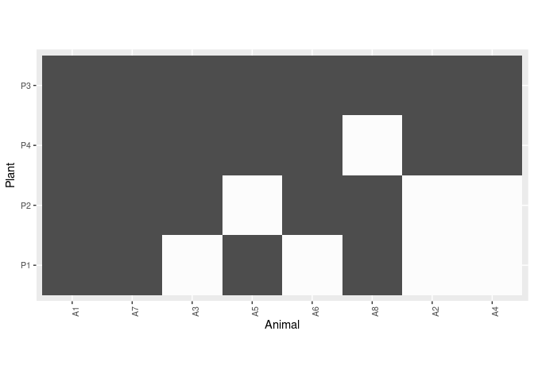
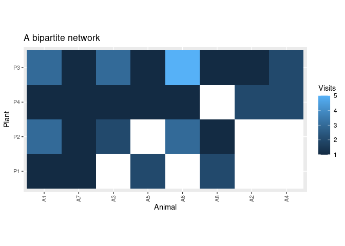

Tools to work with bipartite networks.
Installation
You can install the development version of network.tools from GitHub with:
# install.packages("devtools")
devtools::install_github("Pakillo/network.tools")Usage
Network visualisation
Visualise bipartite network as heatmap
data(web)
plot_web_heatmap(web)
Binarize the network (make it qualitative):
plot_web_heatmap(web, binarize = TRUE)
The output is a ggplot object that can be further modified:
plot_web_heatmap(web) +
ggplot2::labs(title = "A bipartite network")
Data management
Transform interaction data from long to wide format
head(web)
#> Plant Animal Visits
#> 1 P1 A1 1
#> 2 P1 A2 0
#> 3 P1 A3 0
#> 4 P1 A4 0
#> 5 P1 A5 2
#> 6 P1 A6 0
long2wide(web)
#> A6 A1 A3 A4 A5 A7 A8 A2
#> P3 5 3 3 2 1 1 1 1
#> P2 3 3 2 0 0 1 1 0
#> P4 1 1 1 2 1 1 0 2
#> P1 0 1 0 0 2 1 2 0Individual specialisation indices
Calculate indices of niche width and individual specialisation following Bolnick et al. 2002.
data(web)
net <- long2wide(web)
net
#> A6 A1 A3 A4 A5 A7 A8 A2
#> P3 5 3 3 2 1 1 1 1
#> P2 3 3 2 0 0 1 1 0
#> P4 1 1 1 2 1 1 0 2
#> P1 0 1 0 0 2 1 2 0
indiv_spec(net)
#> WIC TNW IndSpec
#> 1 1.71828 2.008202 0.8556311See the package website for more information.
Citation
citation("network.tools")
To cite package 'network.tools' in publications use:
Rodriguez-Sanchez F (????). _network.tools: Tools to Analyse and
Visualise Bipartite Networks_. R package version 0.0.5,
https://pakillo.github.io/network.tools/,
<https://github.com/Pakillo/network.tools>.
A BibTeX entry for LaTeX users is
@Manual{,
title = {network.tools: Tools to Analyse and Visualise Bipartite Networks},
author = {Francisco Rodriguez-Sanchez},
note = {R package version 0.0.5, https://pakillo.github.io/network.tools/},
url = {https://github.com/Pakillo/network.tools},
}